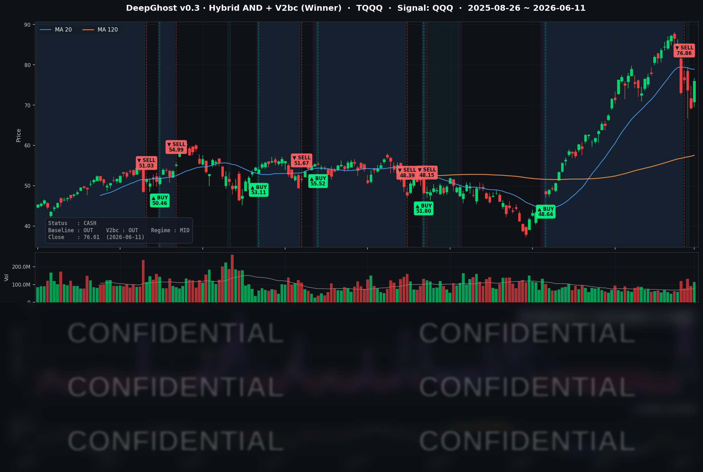

이번 주말에 종전 합의에 서명한다는 트럼프의 립서비스에 시장은 환호했습니다. 이번엔 진짜 할까요? 전쟁이 이렇게 쉽게 끝나는 걸 본적이 없는 것 같습니다. 리스크는 여전히 남아 있습니다. 생각하지 마시고 룰/신호대로 매매 하시면 됩니다. 개인의 판단은 틀릴때가 더 많습니다.
📊 오늘의 매매 신호
| 항목 | 내용 |
|---|---|
| 오늘 할 일 | ✅ 아무것도 안 해도 됩니다 |
| 포지션 상태 | 💵 현금 보유 중 (OUT OF POSITION) |
| 현금 보유 기간 | 2026-06-08 ~ 2026-06-11 (4일) |
| TQQQ 종가 | $76.01 (+9.73%) |
직전 두 달가량(3월 말~6월 초) 끌고 온 TQQQ 매수 포지션은 6월 초 매도 신호에 따라 6/8 전량 청산을 마쳤습니다. 이번 거래의 실현 수익은 회사 기준(v0.2 Baseline) 약 +70% 구간으로 마무리됐고, 그 이후 6/8~6/11은 그대로 현금을 들고 관망 중입니다. 오늘 TQQQ가 +9.73% 급등했지만, 리스크는 여전합니다. 종전 기대감에 유가/금리가 떨어졌지만 또 언제 반대로 움직일지 모릅니다. 시장은 조울증 환자입니다. 시장이 갈팡질팡할때는 피하고, 추세가 형성되고 안정되었을때 들어가도 늦지 않습니다.
TQQQ 시그널 — OUT OF POSITION
현재 상태: 현금 보유 중 | 직전 거래 실현 수익 약 +70% (v0.2 Baseline 기준)

어제(6/10) −6%대 급락의 공포를 하루 만에 되돌리며 TQQQ는 +9.73% 급등했지만, DeepGhost는 이 반등에 매수 신호를 내지 않았습니다. 모델의 추세 측정값이 하루 사이 강한 플러스에서 마이너스로 급락하면서, 이날의 급등을 "추세 회복"이 아니라 "직전 붕괴의 반발 매수"로 판단했습니다.
핵심은 모델이 보는 것이 "오늘 하루 가격이 올랐다"가 아니라 "최근 흐름의 구조가 깨졌다"라는 점입니다. 6/10의 급락이 추세를 한 번 부러뜨렸고, 그 충격은 6/11 하루 반등으로는 복구되지 않습니다. 그래서 가격(V자 반등)과 신호(추세 하락)가 정반대를 가리키는, 이른바 디버전스가 오늘의 핵심입니다.
그렇다면 왜 안 샀을까요. 모델은 "바닥이 한 번 흔들렸다고 곧바로 매수하지 않습니다." 하락 추세가 충분히 무르익거나 명확히 바닥을 찍고 돌아서는 것이 확인돼야 매수 채비를 합니다. 지금의 현금은 "급등을 놓친 관망"이 아니라 "다음 진입을 노리는 정찰 대기"입니다.
재진입 관전 포인트. 오늘 모델 출력은 저점 매수(재진입) 카운트다운의 1일차가 될 수도 있습니다. 앞으로 며칠 신호가 매수권에 더 머무르며 바닥이 다져지면 (즉, 시장의 변동성이 줄고 상승추세에 진입) 진입 가능성이 높아질 수 있고, 반대로 다시 변동성이 튀어 오르면 단발 노이즈로 사라집니다. 연속성 여부가 다음 진입 타이밍이라고 보시면 됩니다.
오늘 미국 시장 — 시황 요약
지수 마감
| 지수 | 종가 | 등락률 |
|---|---|---|
| S&P 500 | 7,394.30 | +1.75% |
| Nasdaq Composite | 25,809.66 | +2.54% |
| Dow Jones | 50,848.75 | +1.86% |
| Russell 2000 | 2,921.03 | +3.02% |
4대 지수가 일제히 반등하며 어제의 낙폭을 거의 전량 되돌렸습니다. 특히 기술·성장주 비중이 높은 나스닥(+2.54%)이 다우·S&P를 큰 폭으로 앞섰고, 소형주(러셀 +3.02%)까지 함께 오르며 상승세가 시장 전반에 고르게 퍼진 모습이었습니다. 3배 레버리지 TQQQ는 나스닥(QQQ +3.38%)의 약 3배인 +9.73%로 마감했습니다.
국채 금리 동향
| 만기 | 수익률 | 전일 대비 |
|---|---|---|
| 3개월 | 3.623% | -1.2bp |
| 5년 | 4.190% | -7.4bp |
| 10년 | 4.463% | -7.9bp |
| 30년 | 4.951% | -7.4bp |
중기·장기물 금리가 일제히 7~8bp 내렸습니다. 유가 급락으로 인플레 기대가 한발 물러서고, 전일 발표된 근원 물가가 예상을 밑돈 점이 겹친 결과입니다. 금리 하락 + 주가 상승이 동시에 나오는, 듀레이션·성장주에 우호적인 전형적인 "골디락스" 조합이 펼쳐졌습니다. 다만 단기물(3개월 −1.2bp)은 거의 제자리였는데, 이는 시장이 6월 FOMC 동결을 사실상 확정(선물시장 동결 확률 약 96%)으로 보고 있기 때문입니다. 즉 이번 금리 하락은 "조기 인하 기대"가 아니라 유가발 인플레 부담이 풀린 데 따른 안도에 가깝습니다. 30년물이 4.95%로 여전히 5% 근방에 머무는 만큼 "고금리 장기화" 분위기는 남아 있습니다.
연준 발언 & 금리 패스
이날 시장을 좌우한 개별 연준 위원의 라이브 발언은 없었습니다. 정책 시그널 역할은 전일 5월 CPI 데이터와 선물시장이 대신했고, 6월 FOMC 동결 확률은 약 96%로 굳어진 상태입니다. 헤드라인 인플레가 +4.2%로 높게 유지되는 한 조기 완화는 어렵지만, 근원 물가가 안정되고 유가가 내려준 덕에 연준이 "동결 기조로 더 지켜볼 시간"을 벌었다는 해석이 우세합니다.
오늘의 핵심 이슈
- 트럼프, 대이란 공습 취소·종전 협상 시사. 호르무즈 해협 공급 차질 우려가 후퇴하며 유가가 −5% 가까이 급락했고, 이것이 인플레·지정학 리스크를 동시에 풀어준 반등의 1차 동력이 됐습니다.
- BofA의 인텔 더블 업그레이드(목표가 $135). 투자의견을 두 단계나 끌어올린 이 코멘트가 반도체 섹터 전반에 매수세를 점화하며 메모리·장비주가 두 자릿수로 폭등했습니다.
- 금리·VIX 동반 급락. 10년물 −7.9bp, VIX −12.5%로 어제의 공포가 빠르게 가라앉았습니다. 위험자산 선호가 폭넓게 살아난 하루였습니다.
변동성 & 투자심리
- VIX: 19.44 (−12.51%) — 어제 22선을 넘었던 공포가 하루 만에 20 아래로 급락하며 단기 경계감이 빠르게 해소됐습니다.
- 공포·탐욕 지수: 직전 급락과 CPI 헤드라인 쇼크로 "공포(Fear)" 영역에 머물던 심리가, 이날 반등으로 "중립" 쪽으로 회복 중입니다. VIX의 20 하회와 폭넓은 지수 상승이 심리 개선과 맞물립니다.
매크로 & 원자재
- WTI $85.83 (−4.67%) · Brent $88.50 (−4.94%) — 이란 종전 시사에 따른 공급 우려 후퇴로 유가 급락. 이번 반등의 출발점이었습니다.
- 금(Gold) $4,236.60 (+3.13%) — 통상 위험자산이 오르면 금은 약해지지만, 실질금리 하락과 지정학·정책 헤지 수요가 겹치며 안전자산도 함께 강세였습니다. 위험·안전자산 동반 상승은 이날 시장을 "금리·유동성 채널"이 지배했음을 보여줍니다.
주요 종목 동향
| 종목 | 종가 | 등락률 | 비고 |
|---|---|---|---|
| MU | 995.87 | +11.66% | 메모리 반등 주도, 반도체 랠리 최선두 |
| INTC | 116.96 | +9.27% | BofA 더블 업그레이드(매도→매수, 목표가 $135) |
| QCOM | 202.96 | +6.15% | 반도체 동반 강세 |
| TSLA | 399.15 | +4.60% | 고베타 성장주 반등 |
| AVGO | 385.57 | +3.62% | AI 반도체 동반 강세 |
| NVDA | 204.87 | +2.22% | 반도체 강세 속 상대적 완만(대형주 차익실현 소화) |
| AMZN | 241.51 | +1.47% | 빅테크 반등 동참 |
| AAPL | 295.63 | +1.39% | 빅테크 반등 동참 |
| GOOGL | 357.77 | +0.39% | 상대적 부진(전일 강세 소화) |
| META | 568.43 | -0.45% | 광고·빅테크 중 소외, 약보합 |
| NFLX | 81.27 | -0.89% | 디펜시브 성향, 반등 소외 |
| MSFT | 390.34 | -1.77% | 커버리지 중 최약 — 반도체로 자금 이동, 차익실현 |
반도체·메모리가 두 자릿수로 폭등하는 동안 소프트웨어 대형주(MSFT −1.77%, META −0.45%, NFLX −0.89%)는 오히려 빠졌습니다. 이날 매도가 "시스템 리스크"가 아니라 메가캡 소프트웨어에서 반도체·장비로 자금이 강하게 갈아탄 섹터 로테이션이었음을 종목 레벨에서 확인할 수 있습니다. 다만 이란 합의가 아직 서명되지 않았고 헤드라인 인플레가 +4.2%로 높은 만큼, 오늘의 반등은 "완전한 안도"가 아닌 "조건부 안도"로 보는 편이 합리적입니다.
Ghost.AI — Quantitative AI Investment
Model: DeepGhost v0.3 | Transformer-Based Deep Learning
Coverage: 13 tickers | Updated every trading day after US market close
⚠️ 본 자료는 정보 제공 목적으로만 작성되었으며 투자 권유가 아닙니다. 모든 투자의 책임은 투자자 본인에게 있습니다. 과거 성과가 미래 수익을 보장하지 않습니다.
[유의사항]
고스트에이아이 주식회사는 「자본시장과 금융투자업에 관한 법률」 제101조에 따른 유사투자자문업자로 등록된 사업자입니다.
- 본 서비스는 불특정 다수를 대상으로 발행되는 단방향 정보 제공 서비스이며, 투자자 개인의 재산 상황·투자 목적·위험 선호도를 반영한 개별 투자 조언이 아닙니다.
- 고스트에이아이 주식회사는 고객과 쌍방향 의사소통(개별 상담, 맞춤형 자문 등)을 제공하지 않습니다.
- 본 콘텐츠는 투자 권유 또는 매매 주문의 청약·청약의 권유에 해당하지 않으며, 최종 투자 판단 및 그에 따른 손익의 책임은 전적으로 투자자 본인에게 있습니다.
고스트에이아이 주식회사 | 유사투자자문업 등록번호: 제2025-000호